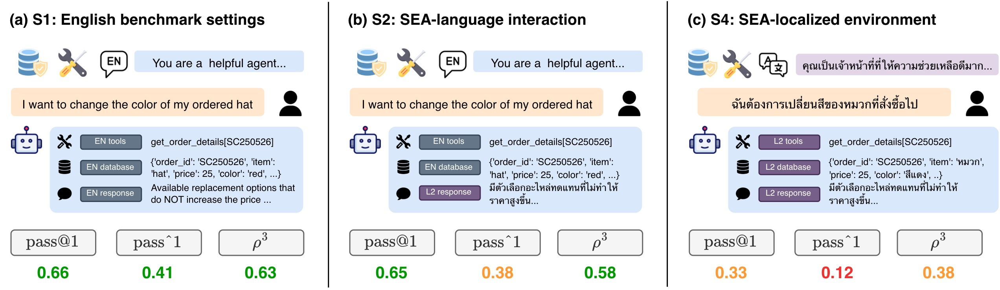
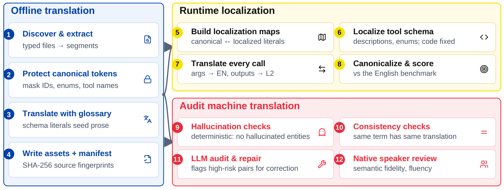
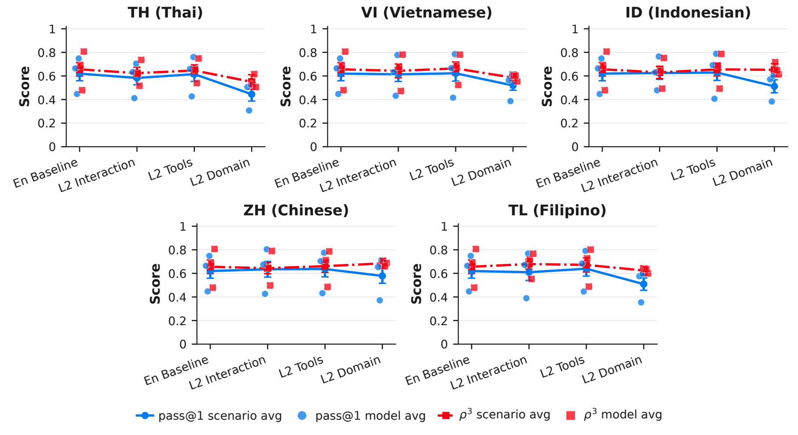
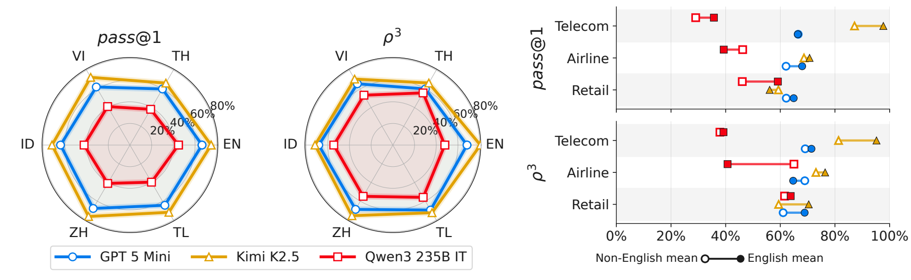

SEATauBench: Progressively Adapting Tool-Agent-User Evaluation Into Low-Resource Southeast Asian Languages
Findings of EMNLP 2026
1SEACrowd 2AI Singapore, Nanyang Technological University 3SCB DataX, SCBX Group 4Chulalongkorn University 5VISTEC 6University of Indonesia 7Cohere
Paper: arxiv.org/abs/2606.28715
Code & data: github.com/SEACrowd/SEATauBench

Abstract
While AI development and evaluation for Southeast Asia (SEA) has grown rapidly, agent capabilities in regional languages are still poorly understood despite its importance to sovereign AI. To fill this gap, we introduce SEATauBench, the first agent-focused evaluation framework for SEA sovereign AI. It adapts τ2-Bench to five languages—Mandarin, Vietnamese, Thai, Indonesian, and Filipino—and evaluates agents across progressively localized settings that vary the language of user-agent interaction, tool specifications, and task domains.
Across three models, we find that English agent capabilities transfer reasonably well when only the conversation language changes, but quality and robustness degrade sharply as more task contexts are localized, with the largest losses in full domain adaptation. We also highlight the limits of English-only agent assessment for predicting agent capabilities in SEA languages. More broadly, SEATauBench provides a diagnostic benchmark and reusable adaptation pipeline for building reliable multilingual agents for linguistically diverse regions.
SEATauBench is pronounced “si-tau-bench,” like the Filipino word for string beans, “sitaw.”
Progressively localizing agent evaluation
Four controlled settings separate multilingual dialogue, tool understanding, and domain reasoning. L2 denotes a target language: Mandarin Chinese, Vietnamese, Thai, Indonesian, or Filipino. Tasks span retail, airline, and telecom.
| Scenario | Dialogue | Tool schemas | Database & policy |
|---|---|---|---|
| S1 · English Baseline | English | English | English |
| S2 · L2 Interaction | L2 | English | English |
| S3 · L2 Tool | English | L2 | English |
| S4 · L2 Domain | L2 | L2 | L2 |
S2 and S3 isolate different surfaces: S3 keeps the conversation in English while localizing tool schemas. S4 localizes the whole agent-facing environment, while task definitions, executable behavior, and expected final states remain equivalent to the English benchmark.
Localize the context, preserve the execution
The adaptation pipeline combines offline translation with runtime localization. A glossary guides translation while executable tokens are protected. At runtime, localized tool arguments are mapped back to canonical values, and evaluation uses equivalent final states. Automated checks and native speaker review assess translation quality.

The paper distinguishes the frozen experiment snapshot from a reviewed release containing approved translation corrections.
Task success falls as the environment is localized
Changing the conversation language alone preserves much of the English performance. Fully localizing the task environment exposes a larger gap. Reported mean pass@1 is 0.62 for the English Baseline, 0.61 for L2 Interaction, 0.55 for L2 Tool, and 0.51 for L2 Domain.
These aggregate comparisons are descriptive: L2 Tool includes two agents, while the other settings include three. The gap varies by language, model, and domain; it cannot be attributed to script type alone.

Quality and robustness tell different stories
Pass@1 measures mean task success; robustness, ρ³ = pass³ / pass@1, measures repeated success relative to single-run success. A model can be consistent on the tasks it solves without solving a large share of tasks. Both metrics are needed to understand multilingual agent reliability.
No agent leads in every condition. In L2 Domain, Kimi-K2.5 has the highest mean pass@1 (0.61), while Qwen3-235B has the highest mean ρ³ (0.63), ahead of GPT-5-mini (0.62) and Kimi-K2.5 (0.59).

See the paper’s diagnostic analysis for critical errors, language correctness, and the limits of English-only evaluation as a proxy for multilingual reliability.
BibTeX
@misc{nguyen2026seataubench,
title={SEATauBench: Progressively Adapting Tool-Agent-User Evaluation Into Low-Resource Southeast Asian Languages},
author={My Chiffon Nguyen and Aulia Adila and Saksorn Ruangtanusak and Kittiphat Leesombatwathana and Vissuta Gunawan Lim and Patomporn Payoungkhamdee and Samuel Cahyawijaya},
year={2026},
eprint={2606.28715},
archivePrefix={arXiv},
primaryClass={cs.CL},
url={https://arxiv.org/abs/2606.28715}
}